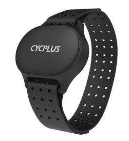
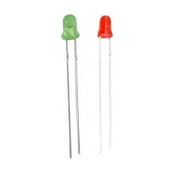
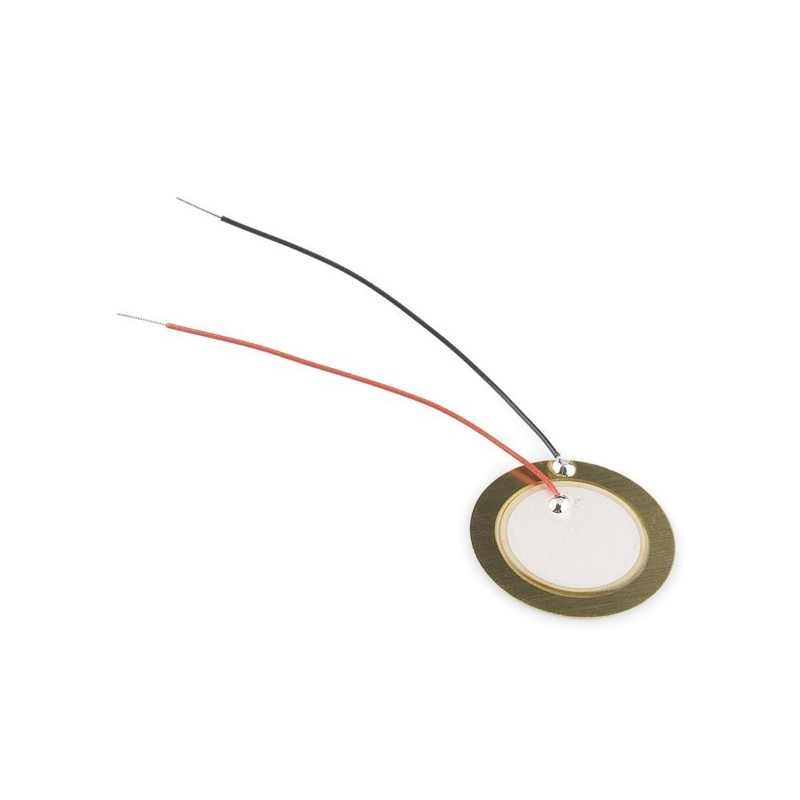

LABSIS
2024
Autores:
Sérgio Isidoro
1221709@isep.ipp.pt
André Nogueira
1212048@isep.ipp.pt
VIDEO Projeto
Nos últimos anos, os avanços tecnológicos têm promovido o desenvolvimento de dispositivos eletrónicos inovadores, capazes de integrar funcionalidades avançadas em estruturas compactas e acessíveis. Esses dispositivos, frequentemente denominados de wearables, combinam monitorização de saúde, segurança e conectividade, desempenhando um papel cada vez mais relevante na melhoria da qualidade de vida.
Entre as inovações destacam-se os sistemas portáteis inteligentes, como os relógios e dispositivos de monitorização biométrica, que permitem acompanhar sinais vitais e detetar condições potencialmente perigosas, como quedas ou alterações na frequência cardíaca. Estes sistemas são especialmente úteis para idosos ou pessoas com limitações físicas, oferecendo não apenas maior autonomia, mas também funcionalidades essenciais de segurança e saúde.
O presente projeto insere-se nesse contexto, propondo o desenvolvimento de um dispositivo leve, portátil e acessível com capacidades de monitorização de frequência cardíaca, deteção de quedas e comunicação remota via Wi-Fi. Para isso, recorreu-se a uma combinação estratégica de hardware e software, incluindo sensores biométricos, um acelerómetro, um microcontrolador versátil e um módulo de comunicação sem fios. Os dados recolhidos são apresentados num display OLED em tempo real e podem ser enviados para uma plataforma online, permitindo uma monitorização remota, eficiente e contínua.
Este relatório explora as bases técnicas do projeto, descrevendo os componentes utilizados, os métodos de comunicação implementados, a estrutura modular do software, os resultados obtidos e o circuito das funcionalidades. O objetivo é fornecer uma visão detalhada do funcionamento do dispositivo, destacando os desafios e soluções encontrados durante o seu desenvolvimento, assim como os benefícios que este sistema pode oferecer no contexto da saúde e segurança pessoal.
Para garantir a integração eficiente de todos os módulos, adotaram-se práticas de otimização, incluindo a utilização de protocolos I2C, UART e ADC, além da implementação de filtros digitais para melhorar a precisão das medições. O resultado é um protótipo funcional que demonstra o potencial deste tipo de tecnologia na criação de soluções práticas, confiáveis e inovadoras.
Materiais e ferramentas
Componentes utilizados:
- Microcontrolador ATmega328P (8 MHz)
- Sensor de frequência cardíaca SEN0203 (ADC)
- OLED 128x64 (I2C)
- Módulo Wi-Fi ESP01 Firmware AT V2.2.2.0 (UART)
- Sensor Acelerómetro MPU6050 (I2C)
- Bateria para alimentação do sistema 3.7V 400mA
- LED vermelho que pisca a 1 Hz (PWM)
- LED verde que pisca a cada batida cardíaca (GPIO)
- Buzzer para alertas (PWM)
- Filtro RC no ADC do sensor SEN0203
- Divisor de tensão para nível da bateria (ADC)
Funcionalidades Implementadas:
- Monitorização de BPM com filtro RC para estabilização do sinal
- Comunicação com o OLED para exibição de dados
- Envio de dados (Wi-Fi / UART)
- Alarmes visuais e sonoros para eventos críticos
Estado da Arte
Para guiar o desenvolvimento do projeto, foi realizada uma pesquisa que selecionou equipamentos específicos no mercado. Foram analisadas duas pulseiras, Coospo HW9 e Cycplus H1, além da cinta peitoral Mindfield eSense pulse. A comparação considerou critérios como preço, qualidade de construção, duração e tipo de carregamento da bateria, tipo de sensor, conectividade e funcionalidades oferecidas.
A pulseira de frequência cardíaca ótica oferece medição precisa de batimentos por minuto (erro de ±1 BPM) e cálculo de calorias, com bracelete ajustável e LED de 5 cores para otimizar treinos. Possui conectividade Bluetooth 5.0 e ANT+ para integração com dispositivos como SmartWatches. Inclui alerta vibratório para segurança ao ultrapassar a frequência máxima, que pode ser personalizada até 200 BPM. A bateria recarregável com carregamento magnético dura até 35 horas.[1]

A pulseira Cycplus é uma solução confortável e prática para monitorar a frequência cardíaca, oferecendo liberdade de movimento e fácil utilização. Com sensor ótico, fornece medições precisas em tempo real, com erro de apenas ±1 BPM. Utiliza LEDs para indicar zonas de frequência cardíaca e é compatível com Bluetooth 5.1 e ANT+, conectando-se a smartphones e smartwatches. Seu carregamento magnético é rápido, completando a carga em 30 minutos, com autonomia superior a 110 horas, ideal para treinos longos.[2]

O dispositivo combina um ECG de 1 canal (500 Hz) e sensor ótico (erro de ±2 BPM), com faixa peitoral lavável e confortável. Suporta múltiplos utilizadores, oferece estatísticas detalhadas de frequência cardíaca e variabilidade, e inclui feedback variado. A app permite treinos de respiração, biofeedback e exportação de dados. Com bateria de 1 ano de autonomia, é prático e fornece informações sobre estresse, respiração superficial e falta de energia, acessíveis via telemóvel ou tablet.[3]

I2C
A comunicação I2C (two wires comunication) é um protocolo de comunicação serial síncrono que utiliza dois fios (SCL e SDA) para a troca de dados entre dispositivos. No projeto, o ATmega328P utiliza este protocolo para comunicar com o acelerómetro MPU6050 e o display OLED. A comunicação I2C baseia-se na variação de tensões nas linhas de dados (HIGH e LOW) controladas por resistências pull-up. A sincronização entre o MASTER (ATmega328P) e os SLAVE (os dispositivos conectados) é essencial para garantir a transferência de dados correta.
- OLED 128x64: Mostra informações como a frequência cardíaca (BPM), estado do sistema e alertas
- MPU6050: Permite monitorizar movimentos e detectar quedas através da análise dos dados transmitidos ao microcontrolador
UART
O UART (Universal Asynchronous Receiver Transmitter) é um protocolo de comunicação serial assíncrono usado para enviar e receber dados entre dispositivos. No projeto, é utilizado para a comunicação entre o ATmega328P e o módulo ESP01. Na comunicação UART, os bits são transmitidos em série,um de cada vez, ao longo de uma linha de dados (TX e RX). Os níveis de tensão definem os estados lógicos, por exemplo, 0V (LOW) e 3.3V (HIGH) no ESP01.
- ESP01: Permite enviar dados de BPM (Batimentos por minuto) até ao dispositivo
- Debug: Usado para enviar informações do ATmega328P para um terminal serial durante o desenvolvimento
ADC
O ADC (Conversor Analógico para Digital) converte sinais analógicos, como o do sensor de frequência cardíaca SEN0203, em valores digitais processados pelo ATmega328P. O ADC funciona através da amostragem de sinais analógicos a uma frequência específica, mapeando a tensão medida para valores digitais (normalmente de 0 a 1023 num ADC de 10 bits).
- SEN0203: O sinal analógico é estabilizado através de um filtro RC antes de ser convertido para digital e usado no cálculo da frequência cardíaca (BPM)
- Nível da bateria: Com um divisor de tensão é possível monitorizar, permitindo a visualização no sistema.
Wi-Fi
A ligação Wi-Fi é efetuada pelo módulo ESP01 com Firmware AT, que envia os dados recolhidos para a plataforma ThingSpeak. O módulo ESP01 utiliza ondas eletromagnéticas na frequência de 2.4GHz para transmitir dados. Atua como um transcetor, convertendo os dados recebidos via UART em pacotes TCP/IP e enviando-os através da rede.
O módulo ESP01 utiliza ondas eletromagnéticas na frequência de 2.4GHz para transmitir dados. Atua como um transceptor, convertendo os dados recebidos via UART em pacotes TCP/IP e enviando-os através da rede.
- ESP01: Permite enviar dados de BPM para o ThingSpeak, facilitando a monitorização remota
- ThingSpeak: Armazena e apresenta graficamente os dados recolhidos de BPM, permitindo o acesso remoto
Timer0
O Timer0 é um temporizador de 8 bits que pode ser usado tanto no modo de contagem quanto no modo de geração de interrupções periódicas, que utiliza um oscilador interno ou uma frequência externa como fonte de clock. Neste caso, o ATmega328P está a funcionar a 8MHz internos e recorrendo a um prescaler, reduzimos a frequência de clock para adequar os tempos de contagem correspondentes a 1ms.
Leitura do ADC:
Com o Timer0 configurado para gerar interrupções a cada 1ms, podemos utilizar essas interrupções para realizar leituras periódicas do ADC.
A cada 1ms surge uma interrupção na qual:
- Ativa uma leitura do ADC
- Armazena a leitura numa variável
Temporização Flag:
A temporização para flag é uma variável utilizada acionar condições e esta é incrementada no Timer0.
- Aciona a condição: Quando um valor x é resto da divisão inteira (igual a 0)
- Não aciona a condição: Quando um valor x não é de divisão inteira (diferente de 0)
Cálculo do BPM:
O cálculo teórico da frequência cardíaca em batimentos por minuto (BPM) é baseado na medida do intervalo entre dois batimentos cardíacos (IBI) determinação do BPM instantâneo. O sistema utiliza um temporizador para medir o tempo e determina o período entre batidas. O sensor SEN0203 capta um sinal analógico que corresponde ao pulso cardíaco. O algoritmo de deteção de picos é suavidade com um filtro média movel e um filtro RC para reduzir o ruido e melhorar os valores do sinal.
Timer1
O Timer1 é um temporizador de 16 bits é usado para gerir um sinal PWM, onde que utiliza um oscilador interno de 8MHz e recorrendo a um modo PWM, prescaler e uma fórmula, reduzimos a frequência de clock para adequar a frequência requerida.
- Componente: LED Vermelho
- Frequência: 1Hz
Timer2
O Timer2 é um temporizador de 8 bits é usado para gerir um sinal PWM, onde que utiliza um oscilador interno de 8MHz e recorrendo a um modo PWM, prescaler e uma fórmula, reduzimos a frequência de clock para adequar a frequência requerida.
- Componente: Buzzer piezoelétrico
- Frequência: 5KHz
SPI
O SPI (Serial Peripheral Interface) é um protocolo de comunicação serial síncrono, que utiliza linhas de dados separadas para transmissão e receção. No projeto, é utilizado para comunicação rápida entre o ATmega328P e dispositivos compatíveis. A comunicação SPI é baseada em um MASTER (ATmega328P) que controla a transferência de dados e um ou mais SLAVE. O MASTER gera o sinal de clock (SCK) e controla a seleção dos SLAVE por meio do pino CS (Chip Select).
- Transferência Rápida de Dados: Ideal para aplicações que exigem alta velocidade de comunicação.
- Sensores e Módulos SPI: Conexão com dispositivos que utilizam SPI, como displays ou conversores digitais.
Programação ISP
A Programação ISP (In-System Programming) é um método utilizado para programar o microcontrolador diretamente no circuito com um programador externo conectado aos pinos apropriados. No projeto, o ATmega328P é programado dessa forma para carregar o firmware necessário, na qual, os comandos e dados são enviados através de SPI (Serial Peripheral Interface).
- Gravação de Firmware: Carrega o código compilado no microcontrolador “arquivo.hex”.
- Configuração de Fuses: Permite configurar opções avançadas como fonte de clock e temporizadores.
- Atualização no Circuito: Evita a necessidade de remover o microcontrolador do circuito.
Etapas de Programação:
- Conexão Física: Conexão ao ATmega328P utilizando os pinos mencionados.
- Compile o código para gerar o arquivo “arquivo.hex”.
- Upload do Código AVRDUDE:
- a. Avrdude -c usbasp -p m328p -U flash:w:arquivo.hex
- b. Ou Microchip Studio em “Device Programming” com target STK500.
- Verificação da programação e teste o funcionamento.
Circuito do Projeto
Para este projeto utilizamos 11 componentes que são imprescindíveis para que o equipamento se comporte como um só. De seguida iremos demonstrar e descrever todos eles e também dar a nossa perspetiva da nossa escolha.
Microcontrolador
O primeiro componente selecionado para o projeto foi o microcontrolador ATmega328P, reconhecido pela sua versatilidade e eficiência. Após uma pesquisa detalhada no mercado, concluiu-se que este microcontrolador seria a escolha ideal para atender às necessidades do projeto, devido às suas características técnicas e ao histórico positivo de uso em projetos anteriores.
O ATmega328P possui uma arquitetura robusta, incluindo três temporizadores integrados: dois de 8 bits e um de 16 bits, que permitem o controlo preciso de eventos e operações cronometradas. Ele também conta com 23 pinos configuráveis como entradas ou saídas digitais, oferecendo grande flexibilidade para interface com outros dispositivos.
Para comunicação, o ATmega328P suporta os protocolos UART, SPI e I2C, o que facilita a integração com sensores, módulos e outros componentes externos. Além disso, tem disponível 6 canais PWM que estão associados aos pinos físicos do microcontrolador e que são distribuídos entre os seus temporizadores internos como o timer 0 com 8 bits, timer 1 com 16 bits e timer 2 com 8 bits. Cada canal PWM permite gerar um sinal digital com ciclos de trabalho (duty cycle) configuráveis.
Possui também um conversor analógico para digital (ADC) de 10 bits com 6 canais de entrada, numerados de ADC0 a ADC5. Esses canais permitem a conversão de sinais analógicos em valores digitais. O ADC utiliza a referência de tensão interna (V_ref) ou uma tensão externa configurável para realizar a conversão. O multiplexador de entrada permite a seleção dos canais ADC, e as leituras podem ser feitas em modos de operação autônomos ou com interrupções. O ADC do ATmega 328P também oferece recursos como prescaler de clock, ajustes de ganho e configuração de canal único ou múltiplos canais.
Essas características tornam o ATmega328P uma solução compacta, eficiente e altamente adequada para este projeto que exige desempenho confiável e integração com diversos periféricos.


Sensor de Frequência Cardíaca SEN0203
O sensor de frequência cardíaca SEN0203 utiliza tecnologia ótica para medir as variações no fluxo sanguíneo, possibilitando a monitorização da frequência cardíaca em tempo real com precisão. Para garantir um sinal analógico mais estável antes do processamento, o dispositivo conta com um filtro RC integrado, que suaviza as leituras.
Durante o desenvolvimento do projeto, também foram testados outros sensores, como o HW-827 e o WPSE340. No entanto, ambos apresentaram uma qualidade inferior para os objetivos pretendidos, resultando em desempenho aquém do esperado. Por isso, optou-se pelo SEN0203, que demonstrou ser a solução mais adequada às necessidades do projeto.
Display OLED 128 x 64
O display OLED 128x64 é um módulo monocromático projetado para exibir informações de forma clara e interativa, ideal para aplicações compactas e de baixo consumo de energia. No contexto deste projeto, ele é usado para apresentar dados importantes, como o batimento cardíaco em tempo real, o valor médio após um minuto, a percentagem de bateria restante, o período de contagem, a mediana dos valores adquiridos, a entrada analógica e o valor convertido pelo ADC. Essa funcionalidade permite ao utilizador monitorizar facilmente as informações críticas do sistema.
O display utiliza uma interface de comunicação I2C, o que simplifica sua ligação ao microcontrolador. Esse protocolo requer apenas duas linhas para comunicação (SDA e SCL), economizando assim pinos e facilitando a construção do circuito em sistemas compactos. A interface I2C do display é implementada com transístores MOSFET e resistências pull-up, garantindo que as linhas de dados e clock permaneçam em nível lógico alto quando nenhum dispositivo está a transmitir, enquanto o nível lógico baixo é usado durante a transmissão de dados.
Esse design eficiente permite uma integração perfeita com o microcontrolador ATmega328P, aproveitando seus recursos para controlar o display de maneira modular e confiável, respeitando as especificações do protocolo I2C. Com isso, o display OLED 128x64 se destaca como uma escolha prática e eficaz para fornecer feedback visual ao usuário em tempo real.
Módulo Wi-Fi ESP01
O módulo Wi-Fi ESP01, baseado no chip ESP8266, é uma solução compacta e eficiente para comunicação sem fios utilizando o protocolo UART. Esse módulo permite a ligação com redes Wi-Fi, possibilitando a transmissão de dados de forma rápida e confiável. No contexto deste projeto, ele é essencial para visualizar o gráfico dos batimentos cardíacos numa plataforma online.
Através do módulo ESP01, o sistema conecta-se à plataforma ThingSpeak utilizando uma rede Wi-Fi. Após estabelecer a ligação, o módulo institui uma ligação segura com o servidor da API e envia os dados dos batimentos cardíacos de forma contínua. Essa comunicação é realizada com o uso de comandos AT e protocolo HTTP, que garantem a integração eficiente com o servidor.
O ESP01 é especialmente vantajoso para aplicações IoT devido ao seu baixo consumo de energia, suporte a várias redes Wi-Fi e flexibilidade em comunicação remota. Dessa forma, ele permite a transmissão em tempo real dos dados do projeto, contribuindo para uma monitorização dinâmica e acessível.

Sensor Acelerómetro MPU6050
O sensor acelerómetro MPU6050 é uma solução avançada que combina um acelerómetro e um giroscópio de 6 eixos, ideal para medir aceleração linear, movimento e velocidade angular. Ele é capaz de medir acelerações em três eixos (X, Y, Z) e detetar rotações angulares, tornando-o uma escolha versátil para diversas aplicações que envolvem monitorização de movimento e orientação.
Uma das vantagens do MPU6050 é a comunicação via I2C, que simplifica sua integração com o microcontrolador, economizando pinos e facilitando o desenvolvimento do sistema. Além disso, o sensor possui um processador digital de movimento (DMP) embutido, que realiza o pré-processamento dos dados e filtra ruídos, reduzindo significativamente a carga de trabalho do microcontrolador e melhorando a precisão das medições.
Inicialmente, utilizou-se o acelerómetro ADXL345 no projeto. No entanto, após uma análise mais aprofundada, decidiu-se optar pelo MPU6050 devido à sua superioridade nos resultados apresentados e à maior flexibilidade que ele oferece em termos de funcionalidades. Essa escolha foi posteriormente validada na prática, confirmando as expectativas e garantindo medições confiáveis e de alta qualidade para o sistema desenvolvido.

Bateria para Alimentação do Sistema
Para alimentar o circuito, utilizou-se uma bateria de íon-lítio de 3,7 V e 200 mAh, escolhida por oferecer várias horas de operação contínua, com base nos cálculos de capacidade e no consumo total dos componentes do sistema. Essa bateria foi considerada ideal para o projeto, equilibrando eficiência energética e portabilidade. A percentagem da bateria é exibida no display OLED, permitindo ao utilizador monitorizar facilmente o nível de carga.
Para garantir o funcionamento adequado dos componentes que operam em 3,3 V, incluímos um regulador de tensão no circuito. Este regulador reduz a tensão da bateria de 3,7 V para 3,3 V, assegurando uma alimentação estável e protegendo os dispositivos sensíveis. Paralelo ao regulador, a bateria é conectada a um divisor de tensão, formado por duas resistências em série, que reduz a tensão a um nível seguro para ser lido pelo ADC do microcontrolador. Isso possibilita uma supervisão precisa do estado da bateria em tempo real.
Com esse circuito otimizado, a bateria oferece uma autonomia estimada de aproximadamente 3,76 horas, considerando o consumo total do sistema. Essa solução combina eficiência energética com funcionalidades essenciais para controlar o estado da bateria, garantindo confiabilidade e praticidade no uso do dispositivo.

Eficiência de 90%:
Iajustada = 47,9 ÷ 0,9 ≈ 53,22 mA
Tempo de Operação:
T = 200 ÷ 53,22 ≈ 3,76 h
| Componetes | Tensão (V) | Corrente (mA) | Potência (mW) |
| Atmega328p | 3,3 | ~ 6,7 | ~ 22,11 |
| LED RED (R2) | 2 | ~ 1,2 | ~ 2,4 |
| LED GREEN (R1) | 2,1 | ~ 1 | ~ 2,1 |
| Buzzer (R7) | 3,3 | ~ 3 | ~ 9,9 |
| MPU6050 | 3,3 | ~ 7,1 | ~ 23,43 |
| SEN0203 | 3,3 | ~ 1,6 | ~ 5,28 |
| OLED | 3,3 | ~ 4,7 | ~ 15,51 |
| ESP01 | 3,3 | ~ 22,6 | ~ 74,58 |
| TOTAL: | ~ 47,9 | ~ 158,07 |
LED Vermelho e Verde
O sistema tem incorporado 2 LED um vermelho e um verde. O led vermelho é usado para piscar a uma frequência fixa de 1 Hz controlado pela saída pwm do microcontrolador. O led verde é mais um feedback para o utilizador pois pisca em sincronia com o batimento cardíaco do utlizador.

Buzzer para Alertas
Achamos por bem incluir um buzzer para completar o sensor de batimentos cardíacos para que seja possível perceber de uma forma mais rápida que o batimento cardíaco do utente alcançou ou ultrapassou os 180 BPM.

Projeto Completo
Nas seguintes figuras, demonstramos a montagem completa do nosso projeto com todos os componentes acima explicados. Futuramente, pretendemos imprimir a placa PCB e utilizá-la no projeto real.

Placa PCB
O nosso grupo decidiu desenhar a PCB no programa KiCad, mas não proceder à sua fabricação. Esta escolha baseia-se na redução de custos e na flexibilidade para testar e validar o circuito em protoboard, permitindo cumprir os objetivos educacionais do projeto de forma eficiente.

SOFTWARE
MAIN
- float battery_percentage(): Calcula percentagem de bateria
MPU6050 (MAIN)
- void MPU6050_init(void): Inicializa o MPU6050/li>
- void detect_fall(void): Detecta quedas de g = 1,2
- MPU6050_ADDR: 0x68, (1101000b, Endereço I2C do MPU6050 (7 bits))
- ACCEL_XOUT_H: 0x3B, (Registo de início para leitura do acelerómetro)
Configuracao INIT:
ADC
- void ADC_init(void): Inicializa o módulo ADC
- uint16_t ADC_read(uint8_t canal): Lê o valor do ADC de um canal especificado
- ADCSRA: ADEN, (Habilita o ADC)
- ADCSRA: ADPS2 & ADPS1, (prescaler 64)
Configuração INIT:
I2C
- void I2C_init(void): Inicializa o módulo I2C (TWI)
- void I2C_start(void): Envia condição de start no barramento I2C
- void I2C_stop(void): Envia condição de stop no barramento I2C
- void I2C_write(uint8_t data): Escreve um byte de dados no barramento I2C
- uint8_t I2C_read_ack(void): Lê um byte do barramento I2C e envia ACK
- uint8_t I2C_read_nack(void): Lê um byte do barramento I2C e envia NACK
- TWSR: 0x00, (Inicializa o barramento I2C/TWI)
- TWBR: (((8MHz / 400kHz) - 16) / 2), (Configura o registador TWBR para obter SCL = 400kHz)
- TWCR: TWEN, (Habilita o módulo TWI/I2C)
Configuracao INIT:
I/O
- void IO_init(void): Inicializa o I/O
- void LED_ON(void): Altera a porta do LED para "0"
- void LED_OFF(void): Altera a porta do LED para "1"
- PB1: PWM1_DDR |= (1 << PWM1_PIN), (OUTPUT)
- PD3: PWM2_DDR |= (1 << PWM2_PIN), (OUTPUT)
- PB0: LED_PULSE_DDR |= (1 << LED_PULSE_PIN), (OUTPUT)
Configuracao INIT:
OLED
- void oled_command(uint8_t cmd): Função para enviar um comando ao OLED
- void oled_data(uint8_t data): Função para enviar um dado ao OLED
- void oled_clear(void): Limpa a tela do OLED
- void oled_init(void): Inicializa o OLED
- void oled_set_cursor(uint8_t row, uint8_t col): Define o cursor (linha e coluna)
- const uint8_t font5x7[5]: Fonte de 5x7 pixels (declarada como constante em PROGMEM)
- void oled_print(char* str): Função para enviar string
- OLED_ADDRESS: 0x3C, (0111100b, Endereço padrão do OLED)
Configuração INIT:
UART
- void UART_init(void): Inicializa o modulo UART
- void UART_transmit(char data): Transmite um unico caractere pela UART
- unsigned char UART_receive(void): Recebe um unico caractere pela UART
- void UART_send_string(const char *str): Envia uma string pela UART
- BAUD_PRESCALE: ((8MHz / (8UL * BAUD)) - 1), (prescaler)
- UBRR0H: BAUD_PRESCALE >> 8, (4 bits mais significativos)
- UBRR0L: BAUD_PRESCALE, (8 bits menos significativos)
- UCSR0A: U2X0, (Double the USART Transmission Speed)
- UCSR0B: TXEN0, (Transmitter Enable)
- UCSR0C: UCSZ01 & UCSZ00, (8bits data)
- BAUD: 76800
Configuração INIT:
TIMER0
- uint16_t filtro_media_movel(uint16_t novo_valor): Suaviza ruidos, com a média dos ultimos N valores
- void calculate_heart_beat(int adc_value): : Função que deteta batimento cardiaco e determina o BPM
- TCCR0A: WGM01, (Modo CTC)
- TCCR0B: CS01 & CS00, (Prescaler 64)
- OCR0A: 124, (1KHz = 8MHz / (2 * 256 * (1 + OCR0A)))
- TIMSK0: OCIE0A (Habilita interrupção de comparação)
- Frequencia: 1KHz (T = 1ms)
Configuração INIT:
TIMER1
- void TIMER1_init(void): Inicialização do PWM no Timer1 (1Hz)
- TCCR1A: COM1A1, (Saída no OC1A não invertido)
- TCCR1B: WGM13, (Modo Phase and Frequency Correct)
- TCCR1B: CS12, (prescaler 256)
- ICR1: 15625, (1Hz = 8MHz / (2 * 256 * ICR1))
- Frequencia: 1Hz
Configuracao INIT:
TIMER2
- void TIMER2_init(void): Inicialização do PWM no Timer2 (5KHz)
- TCCR1A: COM2B1, (Saída no OC2B não invertido)
- TCCR1A: WGM21 & WGM20, (Modo Fast PWM)
- TCCR1B: CS21, (prescaler 8)
- OCR2B: 199, (5KHz = 8MHz / (8 * OCR2B))
- Frequencia: 5KHz
Configuração INIT:
Resultados
Para obter os resultados foram realizados diversos testes com base no funcionamento do sistema com um ponto de vista consumidor.
BPM
No protótipo do projeto foi implementado nas breadboards com redução máxima do comprimento ou sobreposição dos fios e utilização de filtros para minimizar ruídos (white noise), isto porque o projeto requer uma determinação sensível e precisão de um sinal ADC de variações pequenas, o sinal foi convertido para digital e processado via código por um filtro média movel para suavizar e maximizar a qualidade do sinal, e assim com temporizadores e condições sendo possível obter os batimentos por minuto (BPM) com um erro aproximado de +/-1BPM dependendo do local de medição cardíaca.
Acelerómetro
Relativamente ao acelerómetro a determinação dos dados de 16bits é necessário captar os níveis HIGH e LOW da Receção I2C de cada vetor (X,Y,Z) e organizar numa variável com objetivo de converter para unidades de gravidade (g). Após conversão a variação do movimento é um somatório vetorial no qual chamamos de “vetor resultante”. Para finalizar realiza-se uma condição com um valor gravítico estabelecido (ACCEL_CHANGE_THRESHOLD) para indicação de sensibilidade da deteção de quedas ou movimentos bruscos, neste caso g1,2.
OLED
A apresentação dos dados no OLED é com base no I2C, para tal foi implementado no código a tabela ASCII para reconhecimento e transmissão binária, para que os textos sejam convertidos com as respetivas variações das variáveis juntamente com a linha de exposição do texto e limpeza do espaço em “branco”.
WIFI
O envio dos dados para a cloud foi usado um ESP01 com firmware AT e a plataforma ThingSpeak, para suceder a transmissão, o Firmware AT só querer de uma configuração de comandos básicos via UART, tais como configurar a baud rate 76800 de 8 bits e 1 bit stop, protocolo TCP/IP, configuração da rede WiFi (nome/password) para comunicação cloud. O envio é feito em quatro passos num tempo estabelecido de 7,5s de forma a garantir a comunicação e finalizar transmissão dos dados em 30s, estes dados serão apresentados no ThingSpeak de forma gráfica.
Bateria
A bateria é um componente essencial para ilustração e portabilidade do projeto, a tensão de 3,7v passa por um processo de redução com um regulador (AP2114) de 3,3V que suporta 1A, e assim, com um simples divisor de tensão separado e paralelo ao regulador é possível a análise da percentagem no display de tensão 3,3V de forma a ser exequível a verificar a sua variação. Foi retirado medições de corrente de cada componente para determinar a duração da bateria, e com base nos resultados o uso de componentes “low power” é uma opção viável para maior prolongação da bateria.
Discussão
Pontos positivos:
- Análise de algoritmo para determinar do intervalo de batimento cardíaco;
- Comunicação I2C para simplificação esquemática e visualização dos dados;
- Implementação do ThingSpeak para monitorização do BPM instantâneo;
- Circuito operacional a 3,3V com regulador de tensão e bateria;
- Simplificação do circuito protótipo;
- Criação e projeção de circuito compactado e de pequenas dimensões (PCB).
Desafios:
- Condicionamento e processamento de sinais pequenos e a presença de ruído;
- Sensores de gama básica implica existência de ruido em movimento;
- Diversidade de resolução física e código nem sempre favorável;
- Consumos energéticos;
- Projeção da placa PCB
Sugestões de melhorias futuras:
- Redução de consumo energético via código com sleep mode, watchdog, etc;
- Redução de consumo energético no circuito com o uso de componentes low power;
- Impressão da placa PCB;
- Implementação da PCB e sensores no modelo 3D (similar a um relógio);
- Uso de sensores de melhor qualidade;
- Melhoramento no processamento dos sinais.
Conclusão
Este projeto demonstra uma abordagem metódica e abrangente no desenvolvimento de um sistema de monitorização com funcionalidades específicas, tais como, a monitorização de batimentos cardíacos por minuto, deteção de quedas e comunicação com plataformas de dados. A escolha criteriosa de componentes, protocolos de comunicação e software reflete uma compreensão sólida dos requisitos técnicos e práticos de um dispositivo atual.
Pode-se considerar como pontos positivos a utilização de múltiplos protocolos de comunicação (I2C, UART, SPI), aliada a uma arquitetura modular, assegura flexibilidade e eficiência no desenvolvimento. A inclusão de sensores, como o acelerómetro MPU6050 e o sensor de frequência cardíaca SEN0203, proporciona medições com mais precisão, enquanto a interface OLED facilita a interação com o utilizador. A integração do módulo ESP01 e da plataforma ThingSpeak amplia as funcionalidades do dispositivo, permitindo monitorização remota e análise gráfica dos dados recolhidos. O cálculo detalhado do consumo energético e a escolha de uma bateria apropriada demonstram a preocupação em garantir autonomia operacional.
Como desafios e limitações a necessidade de filtros ,como o filtro RC, para suavizar os dados comprova as dificuldades no processamento de sinais analógicos sensíveis. O elevado consumo de componentes como o ESP01,display OLED e o acelarómetro limita a duração da bateria. Sensores de gama básica apresentam maior sensibilidade a interferências e ruídos, afetando a precisão das medições.
Para melhorias futuras a implementação de modos de economia de energia no microcontrolador e utilização de componentes de baixo consumo para aumentar a autonomia. A produção de uma placa de circuito impresso aumentaria a robustez e portabilidade do dispositivo. A construção de um protótipo mais compacto, similar a um relógio, melhoraria a ergonomia e a atratividade do produto. A substituição de sensores de gama básica por opções mais precisas e menos suscetíveis a ruídos pode melhorar significativamente o desempenho. Aperfeiçoamento do algoritmo de processamento de sinais e deteção de quedas para maior confiabilidade e precisão.
[1] COOSPO REALZONE HW9 Armband Heart Rate Monitor
[2] Cycplus H1 Heart Rate Monitor Band
(By ALLDATASHEETCOM, 2017)
https://www.pordata.pt/pt/estatisticas/populacao/esperanca-de-vida-e-obitos/esperanca-de-vida-nascenca-por-sexo
https://www.who.int/data/gho/data/themes/mortality-and-global-health-estimates/ghe-life-expectancy-and-healthy-life-expectancy
(1.3inch-SH1106-OLED, n.d.)
(Preliminary Datasheet 1A LOW NOISE CMOS LDO REGULATOR WITH ENABLE AP2114 General Description, 2010)
ATmega328P 8-Bit AVR Microcontroller with 32K Bytes In-System Programmable Flash DATASHEET, n.d.
1.3 Inch OLED I2C 128×64 3-5V - UNIVERSAL-SOLDER Electronics Ltd, n.d.
1.3inch-SH1106-OLED, n.d.
Bateria Recarregável Li-Po 3.7V 1200mAh 40x30x9mm PIJUICE, n.d.
China Low Price ATMEGA328P-PU ATMEGA328P DIP28 Microcontroller MCU Chip - Quotation - GNS COMPONENTS, n.d.
DFRobot SEN0203 Gravity: Heart Rate Monitor Sensor for Arduino | Rapid Electronics, n.d.
Módulo Wifi ESP8266 ESP-01, n.d.
Piezo Elements Buzzer 35mm :: Micro JPM, n.d.
Sensor de Frequência Cardíaca Cycplus H1 | Deporvillage, n.d.
Módulo MPU6050 Com o Arduino • AranaCorp, n.d.
By ALLDATASHEETCOM, 2012, 2017